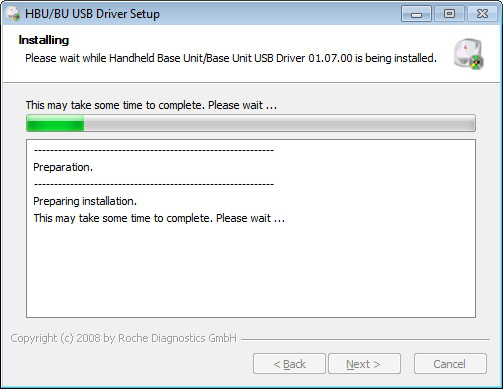

Ch.elexis.connect.rochebaseunit.feature.feature.group
| Version: | 3.0 |
| Kategorie: | |
| Beschreibung: | |
| Author: | |
| Letzte Bearbeitung: | 11. Juni 2014 |
| Voraussetzungen: | Elexis 3.0 |
| Betriebssystem: | Windows, Mac, Linux |
| Lizenz: | Proprietär |
Contents
- 1 Einführung
- 2 Voraussetzungen
- 3 Installation und Konfiguration
- 4 Elexis Plugin
- 5 Geräteeinstellungen generell
- 6 Geräteeinstellungen über USB
- 7 Geräteeinstellungen über Ethernet (LAN)
- 8 Geräteeinstellungen cobas h
- 9 Geräteeinstellungen CoaguCheck XS Plus
- 10 Elexis Konfiguration generell
- 11 Elexis Konfiguration für Verbindung über USB
- 12 Einstellungen für Verbindung über Ethernet (LAN)
- 13 Verwendung
- 14 Anweisungen zu Elexis
- 15 Anweisungen zur Eingabe der Patienten-ID auf dem Gerät
- 16 Plattformen
- 17 Setup USB Treiber
Einführung
Dieses Plugin dient dazu, die Laborgeräte ‘CoaguChek XS Plus’ und ‘cobas h’1 an Elexis anzubinden. Mit diesem Plugin können die gemessenen Laborparameter direkt in die Elexis-Datenbank eingelesen werden.
Voraussetzungen
Dieses Plugin benötigt Elexis V2.1 oder höher, sowie eines der oben genannten Geräte und eine Handheld Base Unit (HBU). Die HBU kann über USB2 oder über das lokale Netzwerk (LAN) angeschlossen werden.
Installation und Konfiguration
Elexis Plugin
Abonnieren Sie das Plugin ‘Roche (Handheld) Base Unit Laborgeräteanbindung’ im MEDELEXIS Konfigurator und stellen Sie sicher, dass es auf dem gewünschten Computer installiert ist.
Geräteeinstellungen generell
[ht] [fig:hbuswitch]
Stellen Sie den Schalter auf Position 1 (Configuration). Schliessen Sie die HBU über ein USB Kabel an einem beliebigen Computer an. Es wird ein Wechseldatenträger Laufwerk verbunden.
Erstellen Sie auf Ihrem Computer eine Datei mit dem Namen ‘BASEConf.xml’ oder kopieren Sie die Musterdatei3 (z.B. im Verzeichnis c:\temp). Editieren Sie diese Datei (z.B. indem Sie die Windows-Taste und die ‘R’-Taste gleichzeitig drücken und ‘notepad c:\temp\BASEConf.xml’ ausführen.
Achten Sie bitte darauf, dass Sie fett gedruckte Werte für Ihre Installation anpassen! Eine Beschreibung zu den entsprechenden Parametern finden Sie auf dem HBU (Wechseldatenträger) in der PDF Datei (‘HBU – Technical Note.pdf’ oder ‘ROCHE HBU-BU Technical Note.pdf’ genannt).
Hinweis zu <NewDate> und <NewTime>: Diese Werte geben Sie an, wenn Sie die Uhrzeit auf der HBU einstellen wollen. Ansonsten lassen Sie diese Einträge leer (<NewDate/>resp. <NewTime/>).
Speichern Sie folgenden Inhalt für USB Verbindungen ab:
=
=
=
=
=
=
=
=<?xml version=‘1.0’ ?>
<BASE_Configuration>
<IP_Configuration>
<IPAddr/>
<Hostname/>
<IPSubmask/>
<Gateway/>
<DNSServer/>
<DHCP/>
<DMS/>
<DMSPort/>
<DMSDisconnect/>
</IP_Configuration>
<Security_Configuration>
<Username/>
<Password/>
</Security_Configuration>
<IR_Configuration>
<SIR_Baud>115200</SIR_Baud>
</IR_Configuration>
<System_Configuration>
<NewDate>01.01.2010</NewDate>
<NewTime>13:55:00</NewTime>
<UserNameAdd/>
<UserNameDel/>
</System_Configuration>
</BASE_Configuration>
Speichern Sie folgenden Inhalt für Ethernet (LAN) Verbindungen ab:
=
=
=
=
=
=
=
=<?xml version=‘1.0’ ?>
<BASE_Configuration>
<IP_Configuration>
<IPAddr/>
<Hostname/>
<IPSubmask/>
<Gateway>192.168.1.1</Gateway>
<DNSServer>192.168.1.1</DNSServer>
<DHCP>enable</DHCP>
<DMS>LABOR-PC</DMS>
<DMSPort>5505</DMSPort>
<DMSDisconnect>0</DMSDisconnect>
</IP_Configuration>
<Security_Configuration>
<Username/>
<Password/>
</Security_Configuration>
<IR_Configuration>
<SIR_Baud/>
</IR_Configuration>
<System_Configuration>
<NewDate>01.01.2010</NewDate>
<NewTime>13:55:00</NewTime>
<UserNameAdd/>
<UserNameDel/>
</System_Configuration>
</BASE_Configuration>
Hinweis zu <DMS>: Sollte die Namensauflösung des gewünschten Elexis Labor PCs in Ihrem Netzwerk nicht funktionieren, können Sie auch die IP Adresse des entsprechenden Computers angeben. In diesem Fall müssen Sie aber sicherstellen, dass diesem PC eine fixe IP Adresse zugeordnet wird (kein Bezug über DHCP). Kopieren Sie die BASEConf.xml Datei auf die HBU (Wechseldatenträger). Bestätigen Sie allfällige Systemmeldungen so, dass die bestehende Datei auf der HBU überschrieben wird. Die HBU wird nun neu gestartet. Prüfen Sie nach dem Neustart den Inhalt der Datei BASEConf.log auf der HBU. Wenn dort drin Folgendes steht, wurde die Konfiguration erfolgreich angewendet: ‘BASEConf.xml OK’ Wenn etwas anderes drin steht, handeln Sie entsprechend dem Fehlertext oder wenden Sie sich an Ihren Gerätelieferanten. Evtl. hilft Ihnen auch der Inhalt der Datei ‘status.log’ auf der HBU weiter.
Geräteeinstellungen über USB
Achten Sie darauf, dass Sie Ihre HBU mindestens die Kernel Version 00.21.18 hat. Bei tieferen Kernel Versionen ist keine Anbindung über USB möglich! Besorgen Sie sich in diesem Fall entweder eine neuere HBU bei Roche oder verbinden Sie über Ethernet (LAN).
Kontrollieren Sie die Kernel Version Ihrer HBU, indem Sie die Datei status.log auf der HBU öffnen. Gehen Sie ganz ans Ende des Logfiles und suchen Sie rückwärts bis Sie eine Zeile finden, die mit ‘Handheld Base Unit version info:’ beginnt. Die Kernelversion ist die zweite Version in der Auflistung (mit ‘KN’ oder bei älteren HBUs mit ‘VERSION_KERNEL’ gekennzeichnet).
Beispiel einer gültigen Version, mit welcher eine USB Anbindung möglich ist:
Handheld Base Unit version info: BL=00.16.24 KN=00.21.18 RF=00.14.34 AP=02.00.03 HW=4.3 BOM=0432b HW_IDENT_NO=5076544001 SN=0000000000010898
Beispiel einer alten Version, mit welcher die USB Anbindung nicht funktioniert:
Handheld Base Unit version info: VERSION_BOOT=00.16.10 VERSION_KERNEL=00.20.04 VERSION_ROOTFS=00.14.14 VERSION_APP=01.01.01 HW_IDENT_NO=4803850001
Stellen Sie den Schalter auf Position 1 (Configuration). Schliessen Sie die HBU über ein USB Kabel an einem beliebigen Computer an. Es wird ein Wechseldatenträger Laufwerk verbunden. Installieren Sie den HBU USB Treiber. Das Setup finden Sie auf der HBU im Unterverzeichnis ‘install’. Unter Windows 7 läuft das Setup so ab, wie in Kapitel [SetupUSBTreiber] beschrieben (andere Betriebssysteme haben wir nicht getestet). Entfernen Sie das USB Kabel und stellen Sie den Schalter auf Position 3 (Serial). Schliessen Sie das USB Kabel wieder an. Die serielle Schnittstelle wird nun automatisch eingerichtet. In der Symbolliste unten rechts finden Sie ein Symbol für die Roche HBU COM Ports (serielle Schnittstellen): [ht] [fig:hbucom01] Wenn Sie dieses Symbol doppelklicken können Sie den zugewiesenen COM-Port im Fenster erkennen: [ht] [fig:hbucom02]
Geräteeinstellungen über Ethernet (LAN)
Entfernen Sie nun das USB Kabel. Schliessen Sie ein Netzwerkkabel an und stellen Sie den Schalter auf Position 2 (Serial & Ethernet).
Geräteeinstellungen cobas h
Übertragung aktivieren: Hauptmenu, Setup, Datenverwaltung, Verbindung, Computer
Konfiguration Patientenidentifikation: Hauptmenu, Setup, ID-Setup, Patienten-ID
Einstellungen für Patienten-ID:
- Aus: Wählen Sie die Zuordnung zum Patienten ausschliesslich in Elexis
- Optional: Bei dieser Option können Sie auf dem Gerät vor der Messung Patienten Angaben eingeben. Diese kann aber übersprungen werden. Ohne Eingabe einer Patientenidentifikation verhält sich die Situation wie bei ‘Aus’. Bei Eingabe einer Patientenidentifikation verhält sich die Situation wie bei ‘Erforderlich’
- Erforderlich (empfohlen): Bei dieser Variante können Sie keine Messung mit dem Gerät machen, ohne dass eine Patientenidentifikation eingegeben wird. Elexis versucht dann den Patienten anhand der eingegebenen Patientenidentifikation zuzuweisen.
Einstellungen für Format der Patienten-ID:
- Alphanum.: Wählen Sie diese Option, wenn Sie Name und/oder Vorname eingeben wollen
- Numerisch: Wählen Sie diese Option wenn Sie nur die Patientennummer eingeben wollen
Geräteeinstellungen CoaguCheck XS Plus
Übertragung aktivieren: Hauptmenu, Setup, Optionen, Computer, Aktiv
Konfiguration Patientenidentifikation: Hauptmenu, Setup, ID-Setup, Patient
Für die Beschreibung der einzelnen Parameter siehe oben bei cobas h.
Elexis Konfiguration generell
Starten Sie Elexis und gehen Sie dort zu Datei-Einstellungen-Datenaustausch-Roche (Handheld) Base Unit (S. Abb. [fig:configusb] und [fig:configlan]).
Generelle Konfigurationswerte:
Timeout (Sek): Der Wert bestimmt, wie lange Elexis maximal auf Resultate warten soll, bevor die Verbindung getrennt wird.
Im Hintergrund: Damit beeinflussen Sie das Verhalten von Elexis. Bei eingeschalteter Option wird die Übertragung im Hintergrund ausgeführt und Sie können weiter in Elexis arbeiten.
Logging: Diese Option verwenden Sie bitte nur auf Anweisung des Supports, ansonsten wird Ihr Computer mit unnötigen Daten gefüllt.
Elexis Konfiguration für Verbindung über USB
[ht] [fig:configusb]
Com-Port: muss dem zugewiesenen COM-Port (siehe Abb. [fig:hbucom02] ) entsprechen.
Geschwindigkeit: muss dem Wert SIR_Baud im BASEConf.xml entsprechen (Standard: 115200).
Daten-Bits: lassen Sie bitte unverändert auf 8
Parität: lassen Sie bitte unverändert auf n
Stop-Bits: lassen Sie bitte unverändert auf 1
Einstellungen für Verbindung über Ethernet (LAN)
[ht] [fig:configlan] TCP/IP Port: muss dem Wert DMSPort im BASEConf.xml entsprechen (Standard: 5505).
Verwendung
Anweisungen zu Elexis
Wenn das Plugin korrekt installiert ist, erscheint in der Labor-View automatisch ein neuer Toolbar Button ‘Roche (Handheld) Base Unit’ (Abb. [fig:toolbarbutton]). Klicken Sie auf diesen Knopf um die Verbindung mit dem Gerät herzustellen. [ht] [fig:toolbarbutton] Das Gerät benötigt für die verschiedenen Tests unterschiedlich lang. Starten Sie die Übertragung erst, wenn die Messung auf dem Gerät abgeschlossen ist. Sie können mehrere Messungen auf dem Gerät durchführen, bevor Sie das Gerät auf die HBU stecken. Stecken Sie das Gerät erst dann auf die HBU, wenn die Verbindung in Elexis aufgebaut ist. Wenn Sie das Gerät vorher auf die HBU stecken, kann das Gerät den Labor-PC nicht finden und die Übertragung wird nicht gestartet. Die Verbindung bleibt bestehen bis die Übertragung abgeschlossen oder das Timeout gemäss Konfiguration abgelaufen ist. Wenn Elexis ein Resultat empfängt, wird versucht dieses einem Patienten zuzuordnen. In Abb. [fig:messwert] ist ersichtlich, wie der Patient zugeordnet wird (Beispiel: Muster Franz sind die Angaben aus Elexis und MUSTER wurde auf dem Gerät eingegeben). Ist es der richtige Patient, drücken Sie OK, ist es der falsche Patient, drücken Sie Cancel. [ht] [fig:messwert] Wenn anhand der Patientenidentifikation vom Gerät kein Patient gefunden werden kann oder wenn gar keine Patientenidentifikation eingegeben worden ist oder wenn bei der vorgeschlagenen Zuordnung Cancel gedrückt wurde, dann folgt das Fenster mit der Patientenauswahl.
Anweisungen zur Eingabe der Patienten-ID auf dem Gerät
Damit eine automatische Zuweisung des Patienten möglich wird, muss auf dem Gerät der Patient der Messung zugeordnet werden. Sie müssen zwingend eines der folgenden Eingabeformat einhalten (ohne Leerzeichen nach dem Komma!):
- PatNummer
Tipp: Patientennummer (numerische Eingabe)
- PatNummer,Namen
Tipp: Es kann auch nur der erste Buchstabe des Namens eingegeben werden
- Namen,Vornamen
Tipp: Namen und/oder Vornamen können auch abgekürzt eingegeben werden
Plattformen
Dieses Plugin wurde unter Windows 7 getestet. Beachten Sie bitte, dass unter Linux die seriellen Ports nicht COM1 usw., sondern /dev/ttyS0 usw. heissen.
Setup USB Treiber
[SetupUSBTreiber] Ablauf des Setup unter Windows 7: [ht] [fig:setup01] [ht] [fig:setup02] [ht] [fig:setup03] [ht] [fig:setup04] [ht] [fig:setup05] [ht] [fig:setup06] [ht] [fig:setup07] [ht]  [fig:setup08] [ht] [fig:setup09] [ht] [fig:setup10] 1 Firma Roche Diagnostics 2 Bei älteren HBU nicht unterstützt 3 im Unterverzeichnis ‘rsc’ des Plugins ist eine Musterdatei vorhanden.